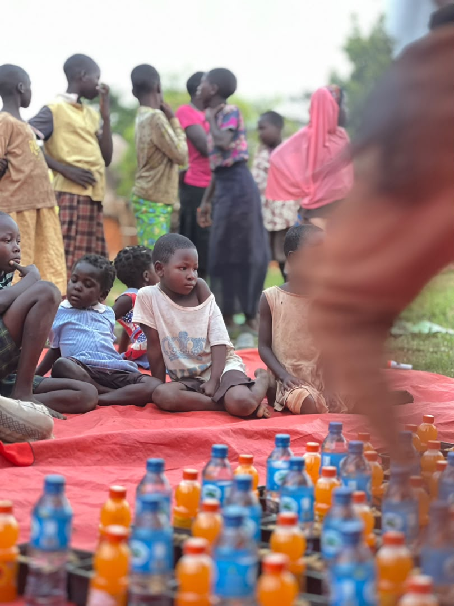
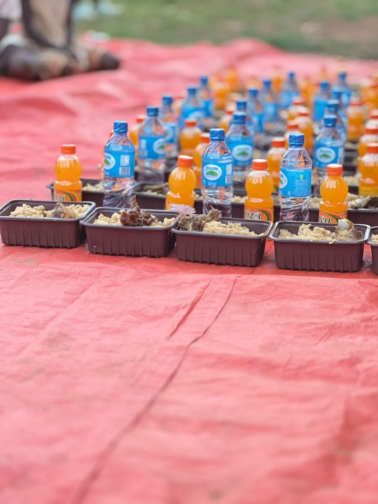

Financial contribution
Request verified instructions for supporting approved foundation activities and community needs.
Ask about donatingHelp us strengthen community initiatives through thoughtful, transparent support. Every contribution begins with a conversation and verified giving instructions.
Online checkout is not yet enabled. Please do not send funds to unverified accounts or phone numbers.

Community moments · SHIFA-BIRY FOUNDATIONSupport can take different forms. Our team can discuss current priorities and appropriate arrangements.
Request verified instructions for supporting approved foundation activities and community needs.
Ask about donatingOffer useful supplies or materials. Contact us first to confirm what is currently needed and how to deliver them.
Discuss suppliesExplore collaboration and longer-term support for locally focused initiatives.
Explore partnershipsOur activities focus on people and communities. Ask us about current needs, intended use of funds and available reporting before making a commitment.

Tell us how you would like to contribute.
Confirm the receiving account, purpose and payment instructions directly with our team.
Request confirmation and retain any payment or delivery documentation.
Reach our team for verified giving information, in-kind contributions or partnership enquiries.
WhatsApp and email are enquiries only. Neither button processes an online payment.